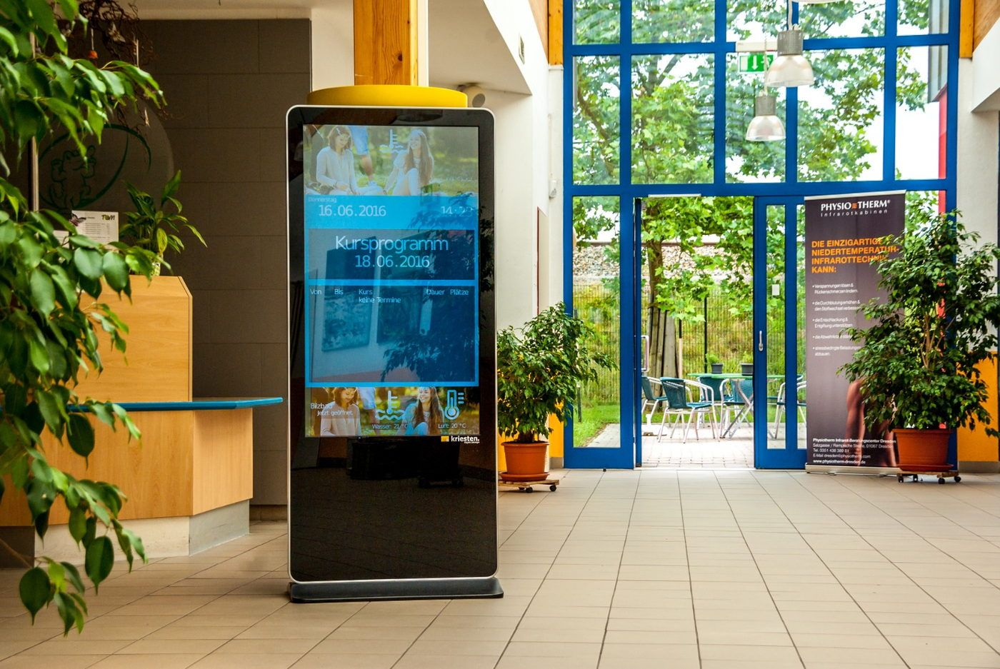

Sunum ve Toplantı Ürünleri
Projeksiyon, sunum ve interaktif ekranlar; toplantı kameraları, mikrofonlar, hoparlörler ve uyumlu bağlantı ürünleri.
Profesyonel bilgilendirme ekranları, dijital tabela ürünleri, medya oynatıcılar ve modele uygun ekran askı ve taşıyıcı sistemleri.

VK Bilgisayar olarak mağaza, bekleme alanı, ofis ve benzeri kullanım noktaları için profesyonel ekran ve dijital bilgilendirme ürünleri tedarik ediyoruz. Ekran boyutu, çözünürlük, parlaklık, günlük çalışma süresi ve iç veya dış mekân koşulları ürün seçiminde birlikte değerlendirilir.
Dikey veya yatay kullanım, içerik aktarım yöntemi ve yönetim özellikleri modelin desteklediği işlevlere bağlıdır. Medya oynatıcı, içerik yönetimi yazılımı, askı aparatı ve bağlantı ürünlerinin gerekip gerekmediği ekranla birlikte ele alınır.
Uzun süreli veya kesintisiz kullanım beklentisi varsa çalışma süresi ve kullanım yönünün üretici tarafından desteklendiği model bazında kontrol edilir.
Projeksiyon, sunum ve interaktif ekranlar; toplantı kameraları, mikrofonlar, hoparlörler ve uyumlu bağlantı ürünleri.
Dizüstü, masaüstü, All-in-One ve mini bilgisayarlar; monitör, klavye, fare, kulaklık ve bilgisayar aksesuarları.
Ağ, fiber optik, görüntü ve USB kabloları; patch panel, konnektör, adaptör, dönüştürücü ve kablo düzenleme ürünleri.
Profesyonel signage ekranlarında nit değeri, 16/7 veya 24/7 çalışma ve içerik yönetimini karşılaştırın.
Rehberi inceleToplantı ve eğitim alanları için etkileşimli ekran seçerken oda mesafesi, dokunmatik teknoloji, yazılım, bağlantı ve montaj gereksinimlerini karşılaştırın.
Rehberi inceleÇözünürlük, yenileme hızı, kablo standardı ve USB-C görüntü çıkışı uyumluluğunu karşılaştırın.
Rehberi inceleGünlük çalışma süresi, parlaklık ihtiyacı, kullanım yönü, yönetim özellikleri ve ortam koşulları dikkate alınır. Bir TV'nin veya monitörün boyutunun uygun olması, profesyonel ekranın bütün kullanım özelliklerini desteklediği anlamına gelmez.
Hayır. Desteklenen çalışma süresi ve dikey/yatay kullanım üreticinin ilgili model bilgilerine göre kontrol edilmelidir. Bütün profesyonel ekranların aynı süre ve yönde kullanım için uygun olduğu varsayılmaz.
Destekleyen modellerde bilgisayar, harici medya oynatıcı, dahili oynatıcı, USB veya ağ tabanlı yazılım kullanılabilir. İçerik yönetimi özellikleri ve gereken lisanslar ürün veya paket koşullarına göre değişir.
Parlaklıkla birlikte ortam sıcaklığı, nem, toz, suya maruz kalma ve üreticinin dış mekân kullanım desteği değerlendirilmelidir. Kullanım konumu ve çevresel koşullar teklif talebinde belirtilmelidir.